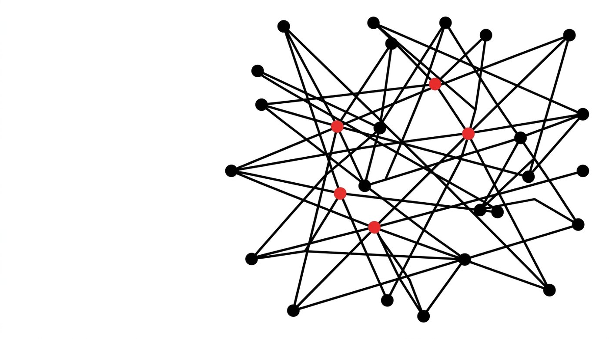

本計畫以兩種資料檢視兩項構念：整合心智取自 50 位師培生的課程前後測問卷，共享能動性則直接由同儕回饋論述辨識。師培生分組設計 SDGs 教案，進入真實國小教室試教，返校後於課堂報告教學歷程，再由同儕提出反思提問與建議；48 位師培生的互評內容構成 567 個編碼段落。兩份資料以學號串接後，可就 45 位師培生同時取得問卷分數與論述指標。

心態量得到，能動性讀得出來。兩者卻沒有走在一起。
整合心智以課程前後測問卷測量，三個構面在一學期後全數顯著提升，效果量介於中度與大之間。共享能動性則由論述辨識：當一位師培生援引學生的學習表現時，這份證據接到的是批判性提問與具體策略建議，還是接到肯定與鼓勵。前者是認識論意義上的能動，後者是關係性的維繫。
本計畫原先預期具備整合心智者較能推動社群展現共享能動性。以學號串接兩份資料後，45 位師培生的資料並未支持這項預期，相關係數為 −.20 且未達顯著。詳見研究發現。